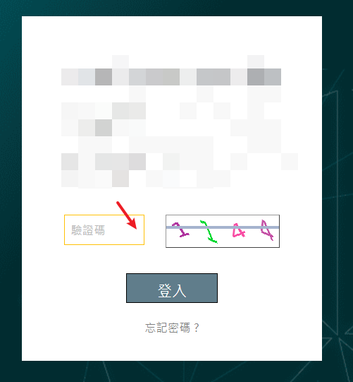

Spring Security登入時加上圖形驗證碼
把驗證碼存到Session來簡單防範攻擊
Spring Security登入加上圖形驗證碼
- 效果

前端
-
帳號密碼+驗證碼很單純不多說
-
點圖片刷新:
-
function reloadCaptcha() { $("#captcha").attr("src", "{登入的url}/getCaptcha?t=" + new Date().getTime()); }
獲取驗證碼圖片
- 將密碼存到Session，也可以存到Redis，這邊用最簡單的方法
/**
* 獲取驗證碼圖片
*/
@GetMapping("/getCaptcha")
public void getCaptcha(HttpServletRequest request,HttpServletResponse response) throws IOException {
// 生成驗證碼圖片，寬 高
ShearCaptcha captcha = CaptchaUtil.createShearCaptcha(160, 45, 4, 3);
// 4位純數字，去除0跟7
RandomGenerator randomGenerator = new RandomGenerator("12345689", 4);
captcha.setGenerator(randomGenerator);
// Console.log("驗證碼code: "+ captcha.getCode());
// 指定響應頭給瀏覽器
response.setContentType("image/png"); // 告訴瀏覽器輸出內容為圖片
response.setHeader("Pragma", "No-cache"); // 禁止瀏覽器緩存
response.setHeader("Cache-Control", "no-cache");
request.getSession().setAttribute("captchaCode", captcha.getCode());
// 输出流给前端
captcha.write(response.getOutputStream());
}
Exception
public class VerificationCodeException extends AuthenticationException {
public VerificationCodeException(){
super("驗證碼校驗失敗");
}
}
Filter
/**
* 登入時的圖形驗證碼過濾器
*/
@Component
public class VerificationCodeFilter extends OncePerRequestFilter {
@Override
protected void doFilterInternal(HttpServletRequest request, HttpServletResponse response, FilterChain filterChain)
throws ServletException, IOException {
if (!"/login".equals(request.getRequestURI())) {
filterChain.doFilter(request, response);
} else {
try {
verificationCode(request);
filterChain.doFilter(request, response);
} catch (VerificationCodeException e) {
new FormLoginFailureHandler().onAuthenticationFailure(request, response, e);
}
}
}
private void verificationCode(HttpServletRequest request){
String captcha = request.getParameter("captchaCode");
HttpSession session = request.getSession();
String saveCaptcha = (String) session.getAttribute("captchaCode");
session.removeAttribute("captchaCode");
if (ObjectUtils.isEmpty(captcha) || ObjectUtils.isEmpty(saveCaptcha) || !captcha.equals(saveCaptcha)) {
throw new VerificationCodeException();
}
}
}
Handler
@Component
@Slf4j
public class VerificationCodeFailureHandler implements AuthenticationFailureHandler {
@Override
public void onAuthenticationFailure(HttpServletRequest request, HttpServletResponse response,
AuthenticationException exception) throws IOException, ServletException {
log.info("login fail, msg: {}", exception.getMessage());
response.setContentType("application/json;charset=UTF-8");
response.getWriter().write(JSON.toJSONString(ResultVO.error(10000, exception.getMessage())));
}
}
SecurityConfig
- 注意至少要先設定登入頁與getCaptcha是可以無條件通過的
@Override
protected void configure(HttpSecurity http) throws Exception {
http.authorizeRequests() //
.antMatchers( //
).permitAll().anyRequest().authenticated();
http.csrf() //
.ignoringAntMatchers( //
).csrfTokenRepository(csrfTokenRepository());
http.sessionManagement() //
.sessionCreationPolicy(SessionCreationPolicy.ALWAYS);
http.rememberMe();
// 檢查圖形驗證碼
if (LOGIN_CAPTCHA){
http.addFilterBefore(new VerificationCodeFilter(), UsernamePasswordAuthenticationFilter.class);
}
上次修改於 2023-01-15